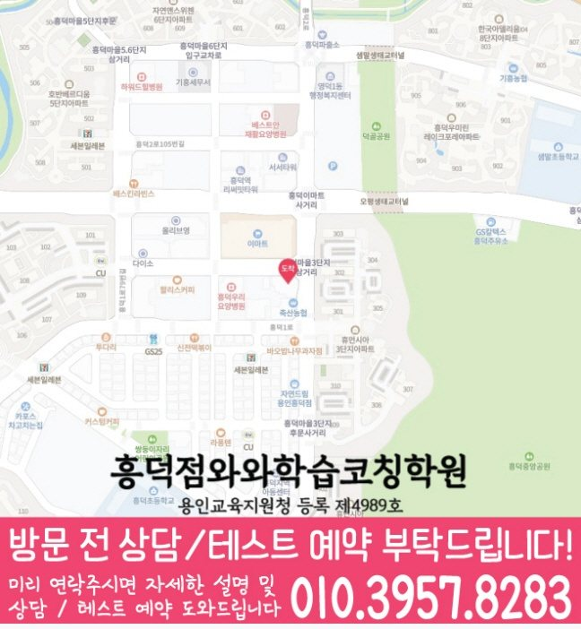

실제 방문 위치
흥덕점의 실제 방문 주소는 경기 용인시 기흥구 흥덕2로 85 우연프라자 201호입니다. 상담 예약과 건물 출입 방법은 방문 전에 확인하세요.
WAWA LEARNING COACHING CENTER · 경기 용인시
와와학습코칭센터 흥덕점 상담을 준비할 때는 현재 교재와 답을 고치기 전의 기록을 함께 정리하세요. 이 페이지에서는 학생이 막힌 부분을 나누어 질문하는 기준을 확인하고, 연결된 2개 동네에서 영어·수학·학년별 공부 방법을 선택할 수 있습니다. 실제 방문 주소와 과목별 개설 자료는 별도의 흥덕점 지점 안내에서 확인하세요.
CENTER AT A GLANCE
와와학습코칭센터 흥덕점 자료를 확인할 때는 영덕동·흥덕마을 안내 범위와 실제 주소를 먼저 맞춰 보세요. 이어서 국어·영어·수학·과학·사회 가능 학년, 학교 참고 정보 13건을 학생 자료와 대조하면 상담 질문을 구체화할 수 있습니다.
LOCAL SOURCE GUIDE
흥덕점의 실제 방문 주소는 경기 용인시 기흥구 흥덕2로 85 우연프라자 201호입니다. 상담 예약과 건물 출입 방법은 방문 전에 확인하세요.
국어 초1~고3 / 영어 초1~고3 / 수학 초1~고3 / 과학 초1~고3 / 사회 초1~고3. 별도 확인 학년과 과목별 조건은 아래 기재 자료를 함께 읽고, 희망 요일의 현재 모집 여부는 지점에 문의하세요.
센터 자료의 학교명과 동네별 타깃학교 자료는 서로 다른 참고 목록입니다. 학교명만으로 전용반·제휴·모집 대상이나 학생의 시험 범위를 판단하지 마세요.
SUBJECT & GRADE
초1 · 초2 · 초3 · 초4 · 초5 · 초6 · 중1 · 중2 · 중3 · 고1 · 고2 · 고3
초1 · 초2 · 초3 · 초4 · 초5 · 초6 · 중1 · 중2 · 중3 · 고1 · 고2 · 고3
초1 · 초2 · 초3 · 초4 · 초5 · 초6 · 중1 · 중2 · 중3 · 고1 · 고2 · 고3
초1 · 초2 · 초3 · 초4 · 초5 · 초6 · 중1 · 중2 · 중3 · 고1 · 고2 · 고3
초1 · 초2 · 초3 · 초4 · 초5 · 초6 · 중1 · 중2 · 중3 · 고1 · 고2 · 고3
제공된 센터 자료 기준입니다. 기재 학년은 현재 모집이나 시간표를 뜻하지 않습니다. 미기재 과목과 학생 진도에 맞는 수업은 지점에 확인하세요.
센터 교습비 안내 확인 →


LEARNING FLOW
샘말초 일정과 현재 진도를 대조해 시험 전까지 남은 기간, 필요한 단원, 실제 공부 가능 시간을 먼저 계산해 보세요.
계획표에는 ‘수학 공부’처럼 넓게 쓰지 말고 교재명, 쪽수, 문제 수, 확인할 오답까지 기록해 실행 여부를 판단합니다.
오답은 정답을 옮겨 적는 것으로 끝내지 않고 국어·영어·수학·과학·사회별 원인을 표시한 뒤 일정 간격을 두고 다시 풉니다.
SCHOOL REFERENCE
센터 자료에 적힌 학교명을 학교급별로 표시했습니다. 동네별 타깃학교 목록과는 별도 자료이며 전용반·제휴·현재 모집을 뜻하지 않습니다. 기재 여부와 관계없이 실제 재학 학교와 시험 범위표를 준비하세요.
PARENT CONSULTATION SCENARIO
최근 점수는 비슷하지만 국어·영어·수학·과학·사회 풀이 시간이 길어졌다면 답안의 멈춘 지점을 먼저 확인해야 합니다. 와와학습코칭센터 흥덕점 상담을 준비할 때 다음 기준을 함께 보세요. 와와학습코칭센터 흥덕점에 현재 상태를 전달하려면 점수 변화와 함께 공부 시간, 미완료 계획, 재풀이 기록을 준비하면 됩니다.
학부모가 준비할 자료를 이해하도록 만든 예시입니다. 특정 결과의 재현 가능성이나 수업 효과를 보장하지 않습니다.
QUESTIONS & ANSWERS
답안에서 비운 문제와 오래 걸린 문제, 고친 문제를 나누어 표시해 가져가세요. 영덕동 학생이 혼자 공부할 수 있는 시간도 빠뜨리지 않는 것이 좋습니다.
국어 자료상 안내 학년은 초1 · 초2 · 초3 · 초4 · 초5 · 초6 · 중1 · 중2 · 중3 · 고1 · 고2 · 고3입니다. 영어 자료상 안내 학년은 초1 · 초2 · 초3 · 초4 · 초5 · 초6 · 중1 · 중2 · 중3 · 고1 · 고2 · 고3입니다. 수학 자료상 안내 학년은 초1 · 초2 · 초3 · 초4 · 초5 · 초6 · 중1 · 중2 · 중3 · 고1 · 고2 · 고3입니다. 과학 자료상 안내 학년은 초1 · 초2 · 초3 · 초4 · 초5 · 초6 · 중1 · 중2 · 중3 · 고1 · 고2 · 고3입니다. 사회 자료상 안내 학년은 초1 · 초2 · 초3 · 초4 · 초5 · 초6 · 중1 · 중2 · 중3 · 고1 · 고2 · 고3입니다. 현재 모집·요일·시간표는 지점에 확인하세요.
국어·영어·수학·과학·사회 가운데 시험이 임박한 과목과 꾸준히 유지할 과목을 구분하세요. 하루 분량은 최근 실제 완료량을 기준으로 정합니다.
국어·영어·수학·과학·사회 오답을 개념 부족·조건 누락·실수·시간 부족으로 나누고 수정한 날짜와 다시 푼 날짜를 따로 기록하세요.
센터 자료의 참고 학교는 샘말초, 석현초, 흥덕초, 매원초, 흥덕중, 다산중, 광교호수중, 상현중, 흥덕고, 기흥고, 신갈고, 상현고, 매원고입니다. 이 목록과 동네별 타깃학교 자료는 범위가 다릅니다. 학교명만으로 전용반·현재 모집·학생의 시험 범위를 확정하지 말고 재학 자료를 준비하세요.
상담 전 체크
새 문제집보다 현재 교재와 답안, 학교 공지, 영덕동 학생의 공부 기록이 상담 기준을 구체적으로 만듭니다.